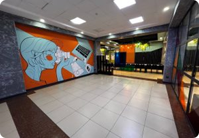

Oʻzbekistonda Milliy malaka tizimini rivojlantirish instituti Oʻzbekiston Respublikasi Prezidentining
2024-yil 30-sentyabrda qabul qilingan
“O‘zbekiston Respublikasi milliy malaka tizimini yanada
takomillashtirish chora-eventsi to‘g‘risida”gi PQ-345-sonli Qaroriga muvofiq tashkil etildi.
Shuningdek,
Vazirlar Mahkamasining 2025-yil 17-iyunda qabul qilingan “O‘zbekiston Respublikasi milliy malaka tizimini
tartibga solishga qaratilgan
ayrim normativ-huquqiy hujjatlarni tasdiqlash to‘g‘risida”gi VMQ-369-sonli
Qaroriga ko‘ra O‘zbekiston Respublikasi Prezidenti Administratsiyasi
huzuridagi Ta’lim sifatini
ta’minlash
milliy agentligining Milliy malaka tizimini rivojlantirish instituti Respublika kengashining ishchi organi
hisoblanadi
va Milliy malaka tizimini muvofiqlashtiruvchi regulator vazifasini bajaradi.
Yangicha yondashuvlar va zamonaviy texnologiyalardan foydalanish.
 Shaffoflik
Shaffoflik
Barcha jarayonlarda ochiqlik hamda adolatli yondashuv.
 Xalqaro hamkorlik
Xalqaro hamkorlik
Dunyo tajribasini milliy amaliyotga joriy etish.
Salohiyatni oshirishKasbiy rivojlanishni taʼminlash.
Jamoaviy ishBirgalikda natijaga erishish.